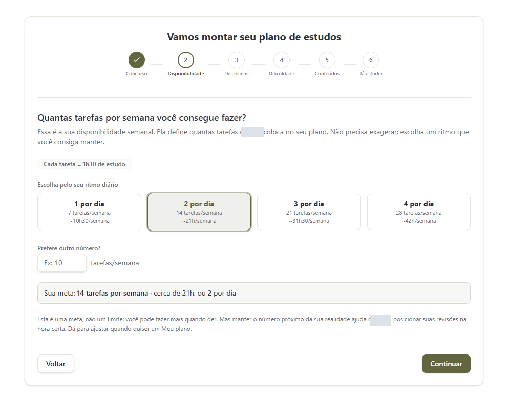
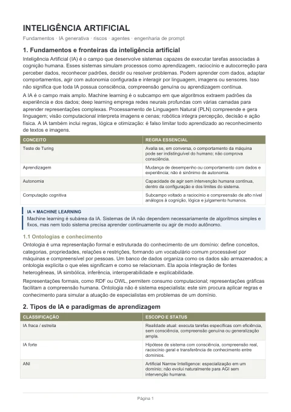
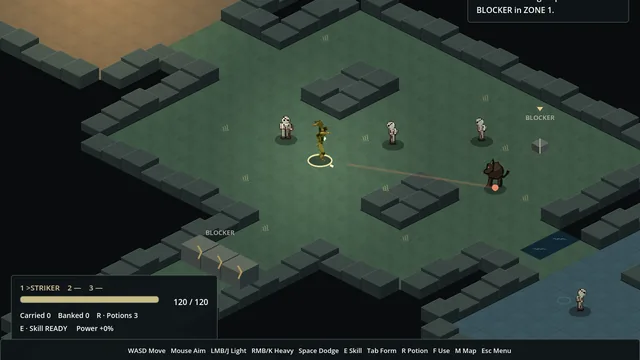
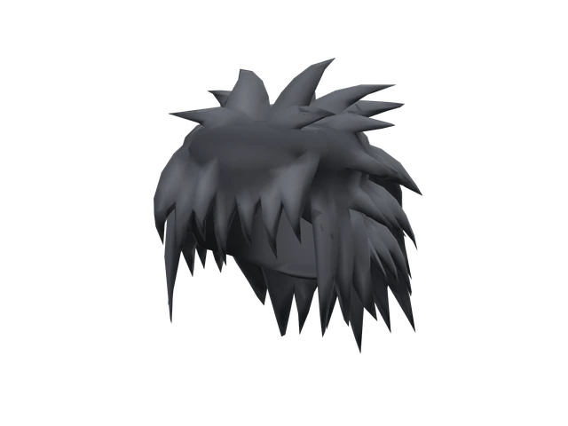
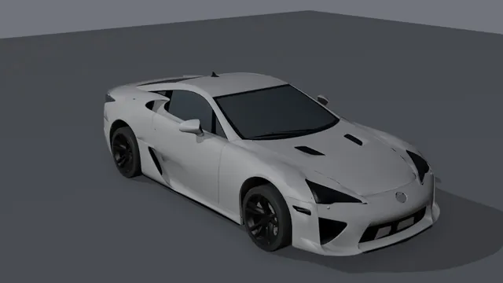

Projetos.
Campanhas, materiais de estudo, automações, jogos e 3D. Um por linha: abra a linha para ver os detalhes.
Sistema de copy para campanhasPlanejamento, textos e páginas de campanhas, do briefing à revisão final.
- Briefings viram planos de campanha, textos, e-mails e páginas.
- Cada peça passa por uma revisão independente antes da entrega.
- Os materiais ficam organizados por campanha, com histórico.
- Fluxos de revisão
Artes para redes sociaisPosts, carrosséis e vídeos curtos para uma página de estudos, com o calendário de publicação.
- Cada arte guarda a fonte de produção para ajustes rápidos.
- Campanha de fim de ano completa, pronta para postar, uma pasta por post.
- Produção visual
- Geração de imagens
- Edição de vídeo
Páginas de venda para mentoresUm modelo de página de venda que cada mentor recebe pronto, com componentes reutilizáveis.
- Um modelo de página que cada mentor recebe pronto.
- Componentes reutilizáveis e testes automáticos.
- React e TypeScript
- Banco de dados
- Testes automáticos
Planejamento de estudosFerramenta que transforma o tempo disponível em tarefas e revisões.

Da disponibilidade real de tempo à próxima tarefa, com revisões integradas à rotina.
- Disponibilidade, disciplinas e formatos definem o plano.
- O histórico orienta as próximas tarefas e revisões.
Da aula ao resumoResumos a partir de PDFs, com revisão e validação dos arquivos.

Estruturei a produção, a revisão independente e a entrega em DOCX.
Transcrição e revisão de aulasAulas gravadas viram documentos revisados, com os termos técnicos conferidos.
- A transcrição roda no próprio computador, sem enviar o áudio para fora.
- Uma revisão automática corrige os termos técnicos de cada área.
- Entrega em DOCX, pronta para estudar.
- Transcrição local
- Reconhecimento de fala
- DOCX
Agente pessoal com memóriaAssistente que lembra de cada projeto, recebe pedidos pelo WhatsApp e executa no computador.
- Guarda a memória de cada projeto em arquivos locais e consulta antes de responder.
- Recebe pedidos e avisos pelo WhatsApp e devolve o resultado pelo mesmo caminho.
- Roda rotinas sozinho, como conferências e resumos, e pede confirmação antes de ações sensíveis.
- Node.js
- Python
Agente de live que responde sobre PCPersonagem com voz que lê o chat ao vivo, reage na hora e responde dúvidas de PC e jogos.
- Escolhe as perguntas do chat e responde por voz o que limita aquele PC naquele jogo.
- Reage na hora com as peças e o jogo citados, enquanto a resposta é preparada.
- Vozes locais e um modelo de reserva mantêm o tempo de resposta.
- Python
- Voz sintética
Automação do meu fluxo de trabalhoRotinas que conferem, testam e organizam cada projeto antes de publicar.
- Testes e conferências automáticas antes de cada publicação.
- Organização de arquivos, versões e registros de cada projeto.
- Python
- Node.js
- Playwright
Lógica de jogo em GodotRPG de ação em versão de teste, com cenários, combate e um personagem que troca de forma.

Lógica de jogo e cenários em Godot, a partir do protótipo em Ruby e Gosu.
- Mapa com iluminação e pontos de interação.
- Personagem que alterna ataque rápido, defesa e ataque à distância.
- Barras de estado e retorno visual das ações.
- Godot
- GDScript
Modelagem no BlenderAcessórios e cabelo para avatares, com atenção à silhueta, à malha e aos materiais.

Bolsa Metro Grafite, Cabelo Wolf Cut, Óculos Prisma Grafite e Satélite Órbita, com encaixe conferido em avatar.
- Modelagem das peças, materiais e texturas.
- Validação local em avatar R15.
Otimização de modelos 3DPipeline em Python no Blender que limpa, reduz e separa veículos em peças para uso em jogo.

Veículos de até 565 mil triângulos reduzidos a no máximo 50 mil, com bake de texturas e exportação em FBX.
- Carroceria, vidros e rodas com pivô, prontos para personalização.
- Cenário com setores, casas e pistas gerados por scripts em Luau.
Veículos: modelos do Sketchfab sob CC BY 4.0, de Benit Kibabu, Lexyc16, ItsDiyor, M GARAGE LTD., Jamie Hamel-Smith e Pavlo_Holubov. Modificados: decimados, sem logotipos e separados em peças.